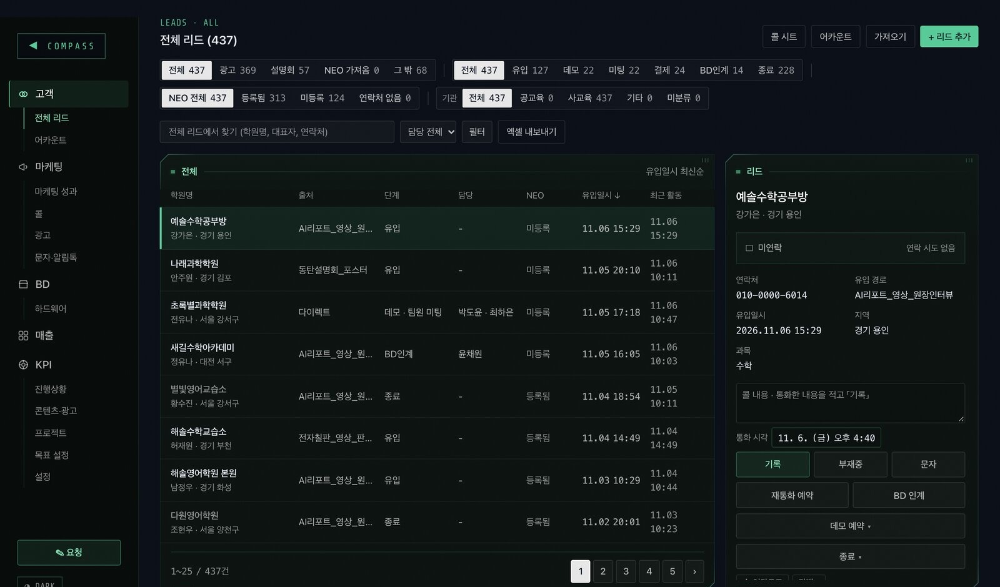
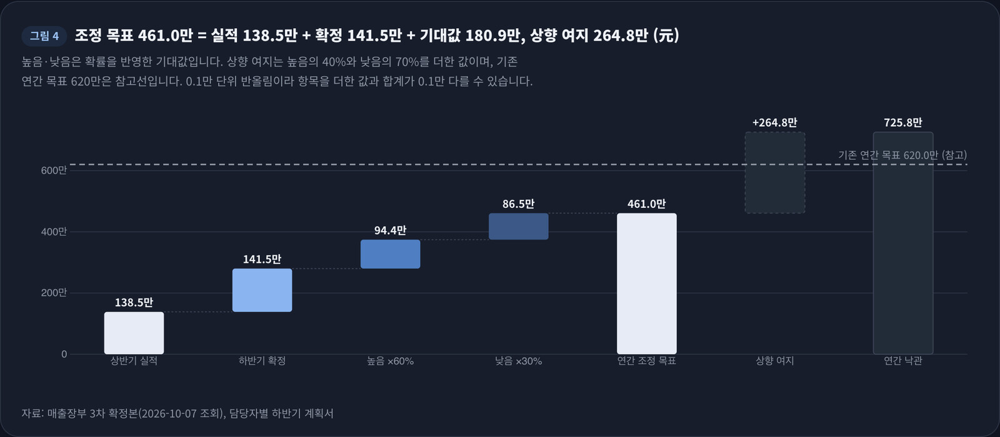
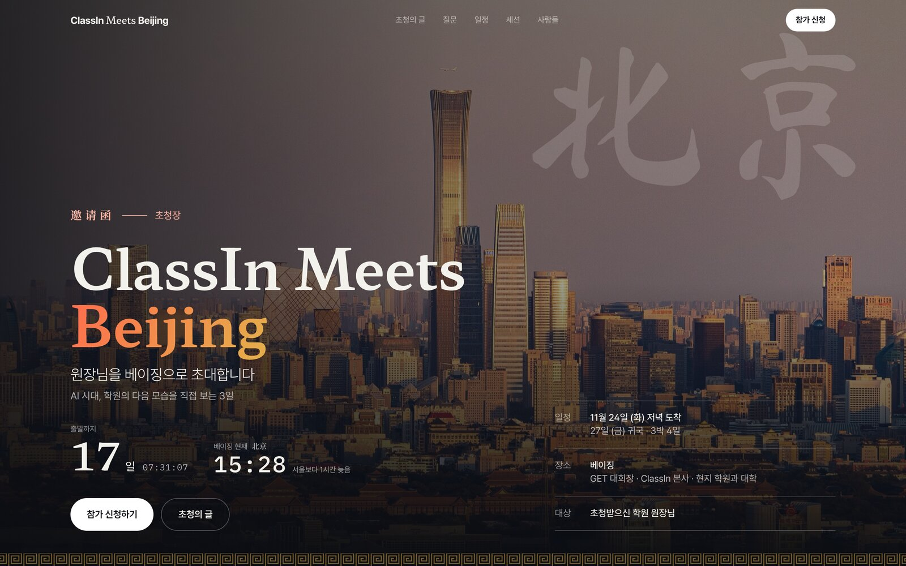

PORTFOLIO㈜사제파트너스 Operations Team 지원
신희성
010-5911-8522
geniusnotstuffed@gmail.com
인하대 교육학 · 산업경영공학 복수전공
흩어진 숫자를 하나의 기준으로,
보고까지 이어지게
클래스인코리아에서 영업과 마케팅을 맡으며, 담당자별 엑셀로 흩어진 고객·매출 데이터를 하나의 데이터베이스와 보고 체계로 옮기는 일을 직접 기획하고 만들었습니다. 이 포트폴리오에는 그중 공고의 세 가지 업무와 닿는 작업만 골라 담았습니다.
3 → 1팀별 엑셀 3곳을 데이터베이스 하나로 통합, 회사 전체 표준 도구로 정착
200여 곳담당자 7명 계획서와 매출 장부를 고객 단위로 대조해 본사(VP) 보고
+63%단계별 전환율 분석으로 병목 개선, 리드 유입 전년 동기 대비(4~8월)
700여 건사내 문서를 검색·AI 질의가 되는 지식저장소로 구조화
공고 업무와 제 경험
| 공고의 주요 업무 | 비슷한 일을 한 경험 | 쪽 |
|---|
Fund Operations
LP Reporting | 매출 장부와 담당자 계획서 대조, 본사(VP) 정기 보고, 주간 성과보고 자동 집계, 월별 광고 예산 사용표(달러·원화 결제 시점 관리) | 4 · 5 |
Portfolio & Investment
Data Management | 고객 200여 곳의 단계·계약·결제 이력 관리, 리드별 통화·데모·견적·결제 타임라인 | 2 · 3 · 4 |
Database / AI Platform
구축 지원 | 엑셀에서 CRM 데이터베이스로 이관, 집계 기준과 판정 규칙 표준화, 본사 CRM 자동 연동, 보고서 생성 자동화, 사내 문서 지식저장소 | 2 · 3 · 6 |
차례
- 01고객 데이터 표준화와 사내 CRM 「Compass」엑셀 → 데이터베이스 이관, 집계 기준·판정 규칙 설계2–3
- 02매출 장부 대조와 본사(VP) 보고계획서·장부 통합, 불일치 검증, 보고서 생성 자동화4
- 03정기 보고 자동화와 비용 관리주간 성과보고 자동 집계, 월별 광고 예산 사용표5
- 04업무 시스템 구축과 데이터 수집지식저장소, 신청 데이터 자동 수집, 공공데이터 리포트, 본사 API 요청서6
- 05데이터 분석 기초연구실·공모전·사업계획서에서 다룬 데이터7
- 06제안: VC 운용 데이터 구조 초안공고를 읽고 그려 본 항목 구조, 검증 규칙, 첫 3개월8
화면 속 고객명·담당자명·금액은 모두 가상 데이터입니다. 실제 회사 수치는 비율(+63%)과 건수만 적었습니다.1
01Database 구축 · 데이터 표준화
고객 데이터 표준화와 사내 CRM 「Compass」
소속EEO ClassIn Korea기간재직 중역할기획 · 데이터 기준 설계 · 바이브 코딩(Claude Code)
배경
- 마케팅·영업·BD 세 팀이 고객 데이터를 각자 엑셀로 관리, 같은 「리드」를 팀마다 다르게 집계해 보고 때마다 숫자가 달라지는 상황
- 어떤 광고가 실제 결제로 이어졌는지, 고객 이력과 담당이 어디서 끊겼는지 확인할 수 없는 구조
주요 업무
- 집계 기준 통일: 리드는 광고 API에 들어온 시점 하나로 집계, 재유입·수동 등록 판정 규칙 문서화
- 데이터 구조 설계: 리드·어카운트·데모·견적·결제 단위로 나누고 단계 이력과 담당자를 함께 기록
- 이관과 정리: 흩어진 고객 기록을 한 데이터베이스로 옮기고 중복 고객 병합
- 자동 연결: Meta 광고 API 웹훅으로 광고 리드 실시간 등록, 본사 CRM과 리드 자동 연동(항목 매핑)
- 보고 화면: 팀원별 과정 지표(KPI), 마케팅 성과·매출 대시보드
성과
- 클래스인코리아 전체가 매일 쓰는 표준 업무 도구로 정착, 주간 성과보고 자동 집계
- 단계별 전환율을 근거로 병목 개선, 2026년 4~8월 리드 유입 전년 동기 대비 +63%
정리 전과 정리 후
정리 전
같은 「리드」를 팀마다 다르게 집계, 보고마다 숫자가 다름
→
기준 정의
집계 기준 1개광고 API에 들어온 시점
판정 규칙신규 · 재유입 · 수동 등록 · 중복 병합
단계 정의유입 → 데모 → 견적 → 결제
→
정리 후: 데이터베이스 하나
리드 · 어카운트학원, 연락처, 출처, 유입 시각, 담당
데모 · 미팅회차, 방식, 참석자
견적 · 결제품목, 금액, 결제 시점
통화 · 활동 기록타임라인
과정 지표 · 대시보드팀원별 KPI, 성과
들어오는 쪽Meta 광고 API 웹훅
나가는 쪽본사 CRM 연동, 주간 보고
판정 규칙
| 상황 | 처리 | 이유 |
|---|
| 광고 신청서로 새 문의가 들어옴 | 신규 리드 | 집계 시점을 광고 API 기록 하나로 고정해 팀별 숫자 차이 제거 |
| 이미 등록된 고객이 다시 문의 | 재유입 | 새 고객으로 세지 않아 리드 수가 부풀지 않게 함 |
| 담당자가 전화·현장에서 받아 직접 입력 | 수동 등록 | 광고 성과와 섞이지 않게 출처를 따로 표시 |
| 같은 원장의 학원이 두 번 등록됨 | 하나로 병합 | 이력·담당이 둘로 갈라지는 것을 막음 |
공고 업무와 닿는 점
- 기존 Spreadsheet·문서 기반 데이터의 표준화와 Database 이관을 실제로 해 본 경험
- 시스템보다 「무엇을 어떻게 셀지」를 먼저 정하는 순서: 펀드 데이터에서도 약정액·요청액·납입액처럼 비슷한 말을 항목으로 분리해 정의
신희성 · Operations Team 포트폴리오2
01Database 구축 · 데이터 표준화 (이어서)
실제 화면
전체 리드: 출처·단계·담당·본사 연동 상태를 한 표에서

출처별(광고·설명회 등)·단계별 건수가 위 칩에 자동 집계되고, 오른쪽에서 기록·데모 예약·인계를 바로 처리직접 보기 ↗
마케팅 성과: 광고에서 결제까지
 리드·광고비·결제를 같은 데이터에서 집계하고, 유입 → 연락 → 어카운트 → 결제 단계별 전환율을 한 줄로직접 보기 ↗
리드·광고비·결제를 같은 데이터에서 집계하고, 유입 → 연락 → 어카운트 → 결제 단계별 전환율을 한 줄로직접 보기 ↗
리드 상세: 이력이 한 줄로
 한 고객의 통화·데모·견적·결제 기록이 시간순으로 쌓임직접 보기 ↗
한 고객의 통화·데모·견적·결제 기록이 시간순으로 쌓임직접 보기 ↗
화면은 실제 제품을 로컬 테스트 데이터로 띄운 읽기 전용 데모이며, 학원명·담당자명·수치는 모두 가상 데이터입니다.
신희성 · Operations Team 포트폴리오3
02정기 보고 · 숫자 정합성
매출 장부 대조와 본사(VP) 보고
소속EEO ClassIn Korea기간2026.09 ~ 2026.10역할매출 분석 · 데이터 대조 · 보고서 작성
배경
- 본사(VP) 보고를 앞두고 상반기 실적 진단과 하반기 계획이 필요한 상황
- 담당자별 계획서와 매출 장부의 기준이 달라, 같은 고객의 금액·확정 여부가 문서마다 다르게 적힌 상태
주요 업무
- 담당자 7명의 하반기 계획서와 매출 장부를 고객 200여 곳 단위로 통합
- 담당자 간 중복 등재, 장부 「확정」과 계획서 「높음」의 불일치를 찾아 확인 필요 항목으로 분리
- 확정 100% · 높음 60% · 낮음 30% 확률 가중으로 확정·보수·낙관 3개 시나리오 산출
- 상반기 매출 진단: 전년 대비 감소분을 대형 HW 고객과 그 외 고객으로 나눠 원인 규명
- 장부 집계부터 보고서 생성까지 자동화, 인터랙티브 웹 보고서로 본사 보고
성과
- 본사 보고 자료 완성, 장부가 바뀔 때마다 같은 절차로 재생성해 표·그림·본문 숫자 일치
- 매출·리드 데이터를 꾸준히 정리해 사내에서 「클래스인 통계청장」으로 불림
처리 순서
① 통합장부 + 계획서 7건 → 고객 200여 곳
→
② 대조중복 등재, 등급 불일치 → 확인 항목
→
③ 가중확정 100 · 높음 60 · 낮음 30
→
④ 생성표 · 그림 · 본문을 같은 값으로
장부가 바뀌면 손으로 고치지 않고 ①부터 다시 실행 · 원칙: 숫자는 장부 한 곳에서만, 같은 숫자는 어디서나 같은 값, 확정 건에는 근거 한 줄

샘플 보고서 · 실적 + 확정 + 확률 가중 기대값으로 조정 목표 산출 · 본사(중국) 보고라 단위는 위안(元)직접 보기 ↗
공고 업무와 닿는 점
- LP 정기·수시 보고: 원천 데이터 한 곳에서 보고서 숫자를 뽑고, 바뀌면 다시 생성하는 방식
- 여러 사람이 만든 표를 한 단위로 합칠 때 생기는 중복·불일치를 먼저 찾아 확인받는 습관
샘플 보고서의 금액·고객명·담당자명은 가상 데이터이며, 비율 구조만 실제와 같습니다.
신희성 · Operations Team 포트폴리오4
03정기 보고 · 비용 관리
정기 보고 자동화와 비용 관리
소속EEO ClassIn Korea기간재직 중역할보고 체계 설계 · 데이터 수집 자동화
주간 성과보고 자동 집계
- 광고 성과, 단계별 퍼널, 매출 데이터를 매주 자동으로 다시 수집해 보고 재료를 만들고, 작성 가이드에 맞춰 본문을 쓴 뒤 사내 지식저장소에 발행하는 흐름 구축
- 보고서를 쓰는 사람이 숫자를 손으로 옮기지 않게 해 보고마다 숫자가 달라지는 문제를 없앰
데이터 다시 수집광고 · 퍼널 · 매출
→
브리핑 생성이번 주 숫자 요약
→
본문 작성정해진 양식 그대로
→
발행사내 지식저장소
| 주간 보고 숫자 칸 | 이번 주 | 지난주 | 증감 | 가져오는 곳 |
|---|
| 광고 리드 | 42 | 35 | +7 | 광고 API → CRM 유입 기록 |
| 데모 진행 | 9 | 11 | −2 | CRM 데모 회차 기록 |
| 결제 | 3 | 2 | +1 | CRM 결제 기록 · 매출 장부 |
| 광고비 | $410 | $395 | +$15 | 광고 API 일별 집계 |
주간 보고에 들어가는 숫자 칸을 보여 주기 위한 예시이며, 값은 가상 수치입니다.
월별 광고 예산 사용표 (2026.10~)
- 메타 광고는 달러 카드 자동 청구, 구글 광고는 원화 선불 충전이라 팀 안에서 「언제 얼마가 나가는지」가 보이지 않던 상황
- 광고 API 집계 → 결제 화면 청구·충전 내역 → 카드 청구 기록 순으로 대조하고, 기준일 환율로 원화 환산해 한 표로 정리
- 팀 보고 페이지 맨 위 같은 자리를 매달 덮어써서, 출처·기준일·환율을 함께 남김
| 채널 | 결제 방식 | 통화 | 이번 달 사용액 | 원화 환산 | 다음 결제 시점 |
|---|
| 메타 광고 | 카드 자동 청구 | USD | $1,200.00 | ₩1,680,000 | 청구 한도 도달 시 |
| 구글 광고 | 선불 충전 | KRW | ₩300,000 | ₩300,000 | 잔액 소진 전 충전 |
| 유튜브 광고 | 구글 선불 잔액 공유 | KRW | ₩15,000 | ₩15,000 | 캠페인 종료일 |
| 합계 · 기준일 환율 1 USD = 1,400원 · 출처: 광고 API, 결제 화면, 카드 청구 기록 | ₩1,995,000 | |
표의 금액과 환율은 구조를 보여 주기 위한 예시 수치입니다.
공고 업무와 닿는 점
- Capital Call · Distribution · Commitment 데이터: 금액과 함께 날짜·출처·원 통화·환산 기준일을 같이 남기는 방식
- USD 펀드와 국내 펀드를 함께 다룰 때 필요한 통화별 기록과 원화 환산 기준 관리
- 정기 보고 자동화: 보고 재료를 사람이 옮기지 않고 원천에서 다시 뽑는 구조
신희성 · Operations Team 포트폴리오5
04업무 시스템 · AI 활용 · 데이터 수집
업무 시스템 구축과 데이터 수집
업무에서 생긴 문제를 풀기 위해 직접 기획하고 바이브 코딩(Claude Code)으로 만든 도구입니다. 개발 전담이 아니라, 실제 업무를 하는 사람이 필요한 구조를 정하고 만든 사례입니다.
업무 지식저장소
2026.07 ~ · EEO ClassIn Korea
- 사내 노션 문서 700여 건을 한곳으로 옮겨 정리
- 주제 지도 14개로 문서끼리 연결
- 검색과 AI 질의로 문서 내용을 바로 확인, 주간보고 자동 발행처로 사용
본사 API 개발 요청서
2026.10 · EEO ClassIn Korea
- 국내 고객 연동 요구를 본사 공식 API 문서와 전수 대조
- 이미 있는 기능과 새로 필요한 기능을 나눠 요청 7건으로 정리
- 문서와 다시 대조해 사실관계를 바로잡은 뒤 본사 전달
행사 신청 데이터 자동 수집
2026.05 ~ · EEO ClassIn Korea
- 행사 초청·신청 페이지 6종을 외주 없이 1일 이내 제작
- 신청 즉시 행사별 전용 구글 시트에 자동 저장(웹훅)

meets.classin.co.kr/beijing보기 ↗
학군 리포트: 공공데이터 수집·정리
2026.10 · EEO ClassIn Korea
- 카카오 로컬 API와 학교알리미 공시 데이터로 학원 반경 초·중·고 정보 수집
- 학생 수, 학급당 인원, 전출입, 입학생 3년 추세를 학교 카드로 자동 정리
 기획부터 배포까지 하루 만에 공개보기 ↗
기획부터 배포까지 하루 만에 공개보기 ↗
사내 업무 관리 시스템
2024.07 ~ 2024.12 · 오오칠팔구
- 체계가 없던 사내 업무 관리를 노션 기반 칸반으로 정립, 프로젝트·담당·진행 상태를 한 보드에서 추적
- 팀원 피드백을 반영해 계속 고치며 재택근무 환경의 업무 공유 문제 일부 개선
공고 업무와 닿는 점
- 실제 Fund Operations 업무를 기반으로 시스템 기능과 업무 프로세스를 개선하는 역할: 개발 담당에게 넘길 요구사항을 문서로 정리해 본 경험
- Google Workspace(Sheets · Forms · Apps Script), Notion 등 클라우드 협업 도구를 업무 흐름에 연결해 쓴 경험
신희성 · Operations Team 포트폴리오6
05학업 · 연구 · 이전 경력
데이터 분석 기초
산업경영공학을 복수전공하고 교육빅데이터 연구센터와 AI 연구실에서 데이터를 다뤘습니다.
- 2017.02 ~ 2023.08인하대학교 교육학 · 산업경영공학 복수전공GPA 3.83 / 4.5
- 2021.08 ~ 2022.08교육빅데이터응용연구센터 · 학부연구생Random Forest 기반 한국어 쓰기 시험 자동 채점 알고리즘 구현, 대한상공회의소 직업기초능력평가 보고서의 데이터 표 제작·차트 시각화·최종 편집
- 2022.03 ~ 2022.12교육빅데이터응용연구센터 · 수업조교학부·대학원 수업에서 R 기반 Jamovi 데이터 분석 실습 강의 진행, 강의자료 제작, 한 학기 연임
- 2022.08 ~ 2023.06보이스인공지능연구소 · 학부연구생인공지능핵심기술 원천 사업 연차보고서와 연구개발 기획안 2건 작성, Agile·WBS 기반 일정 관리
- 2022.12제4회 빅스타 경진대회 · KOGAS팀 리더, FB Prophet 기반 장기 천연가스 수요 예측 모델 개발, 본선 최종 6위
- 2022.12생물다양성 데이터분석 경연 · SK하이닉스팀 리더, Tableau 기반 지리산 생물다양성 데이터 시각화, 상위 10%
- 2023.11 ~ 2024.02코드잇 · 사업개발 인턴참여기업 9곳 수요조사 설문·FGI 설계, 결과에서 역량·채용 수요 데이터를 도출해 「AI 활용 데이터 분석가 부트캠프」 사업계획서 작성, 심사 통과·우수 과정 선정
- 2024.07 ~ 2024.12오오칠팔구 · 사업개발 매니저정부 지원사업·나라장터 용역 수주부터 수행까지 전 과정 관리, EDUTECH ASIA 2024(싱가포르) 전시 기획 및 운영
- 2021.02 ~ 현재동암청소년중고등학교 · 검정고시 야학2021 교무주임, 교육청·시청 대상 사업보고서로 1,000만 원 이상 지원 확보·관리
도구
| 데이터 | Python, SQL, R(Jamovi), SPSS, Tableau |
| 업무 도구 | Google Workspace(Sheets · Forms · Apps Script 웹훅), Notion, MS Office, 한글 |
| AI · 자동화 | Claude Code 바이브 코딩(CRM · 대시보드 · 보고서 생성), 생성형 AI 활용 문서 정리 · 요약 |
| 영어 | 중국 본사 개발팀과 기능 요구사항·일정 실무 커뮤니케이션 (TEPS Level 3, 만료) |
신희성 · Operations Team 포트폴리오7
06제안 · 공고를 읽고 그려 본 초안
VC 운용 데이터 구조 초안
공고의 업무 목록을 데이터 항목으로 옮겨 보면 아래와 같은 구조가 됩니다. 실제 펀드 운영을 해 본 적은 없기 때문에, 입사 후 실무를 배우며 함께 고쳐 나갈 출발점으로 그렸습니다.
이관 전에 걸러 낼 검증 규칙
| 규칙 | 막는 실수 |
|---|
| 출자자별 약정액 합계(GP 출자 포함) = 펀드 약정총액 | 약정 누락, 같은 출자자 이중 입력 |
| LP별 누적 납입액 ≤ 약정액 | 초과 요청, 입력 단위 오류 |
| Capital Call 회차 금액 = LP별 요청액 합계 | LP별 배분 계산 오류 |
| 투자 후 기업가치 = 투자 전 기업가치 + 라운드 전체 투자금액 | 우리 펀드 투자금만 더하는 실수, Valuation 입력 오류 |
| 지분율은 보유 주식 수 ÷ 발행주식 총수, 기준(희석 여부)을 함께 기록 | 건마다 다른 기준이 섞이는 문제 |
| 송금 전에 투자 전 외국환신고 완료 여부 확인 | 신고 누락, 기한 경과 |
입사 후 첫 3개월
1개월실제 펀드 운영 업무를 맡아 배우며, 지금 쓰는 스프레드시트와 문서를 목록으로 정리
2개월같은 단어가 같은 숫자를 뜻하도록 항목 정의서와 검증 규칙을 작성해 팀과 공유
3개월Database 이관 데이터 정리·검증 지원, LP 보고 자료 중 DB에서 바로 나올 수 있는 항목부터 전환
신희성 · Operations Team 포트폴리오8